Novel Clock Signal Analysis - Rise/Fall Time, Jitter and Jitter Separation
Hideo Okawara, Verigy
Paper ID 110011
Abstract
Since the unit interval of digital signal for high-speed digital communication is getting narrower year by year, the analog aspects of digital signals are becoming critical. Rise time, fall time and jitter are the most typical factors to represent the digital signal integrity. A waveform sampler is one of the useful analog resources in mixed signal testers. Utilizing a 6 GHz bandwidth sampler (MCC), you can capture high-speed digital signals and analyze them precisely. This paper reports how the MCC measures a 1.25 GHz clock signal and how to analyze the waveform with various DSP techniques. It contains time-domain waveform analysis and spectrum analysis. With looking at the original noisy waveform, the total jitter can be calculated. By applying FFT and creating a frequency domain spectrum, random jitter and deterministic jitter can be separated. With applying IFFT, the noise-free waveform can be extracted from the original waveform, and the rise/fall times and the duty cycle ratio can be calculated.
Key Words
High-speed Digital, Rise Time, Fall Time, Jitter, Jitter Separation, Waveform Sampler, FFT, IFFT
Introduction
Digital signals are simple high/low discrete signals; however analog aspects are becoming critical for high-speed digital communication signals because the unit interval is getting narrower year by year. Rise time, fall time and jitter are the most typical factors to represent the digital signal integrity. There are many sophisticated methodologies available in digital testers to evaluate these parameters. When utilizing conventional pin electronics, the logic compare level and edge timing must be swept for reconstructing the waveform. This can be time-consuming, and sometimes has limited accuracy.
A waveform sampler is a useful analog resource in mixed signal testers. The module ID MCC is one of the excellent analog resources in the V93000 SOC test system. It has the analog bandwidth of 10 GHz (@-6 dB) and 6 GHz (@-3 dB), maximum 110 Msps of actual sampling rate and 16-bit resolution. There are four independent differential input channels available in a single module so that it is appropriate for multi-site testing. By utilizing MCC, you can capture high-speed digital signals and analyze their waveform and spectrum precisely.
This paper reports how the MCC measures a 1.25 GHz clock signal and how you can analyze the captured waveform data by applying various DSP techniques. Two different approaches are described here. One is time-domain waveform analysis and the other is frequency-domain spectrum analysis. Looking at the original noisy waveform, the total jitter can be calculated.
In the first section, applying FFT and creating a frequency domain spectrum, jitter components are estimated by sorting the spectrum. By separating specific spurious components, random jitter and deterministic jitter can be estimated. In the second section, applying reshuffling and IFFT method, the noise-free waveform can be extracted from the original data. Then you can easily figure out the rise/fall times and the duty cycle ratio from the noise-free waveform. After that the jitter is estimated by examining the trace thickness at the rising/fall edges.
Experimental Results
Test Configuration
Figure 1 shows the experimental block diagram for the data processing described in this paper. Two Pin Scale 3600 digital pin drivers generate a differential 1250 MHz clock stream. The differential signal of the clock stream is measured by the sampler MCC.[1]
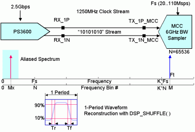
Figure 1. Test Block Diagram
There are eight independent timing-edges available in the pin driver. Equally spaced 8 edges construct 4 clock pulses in a single vector period, as depicted in Figure 2. This is called X8-mode.
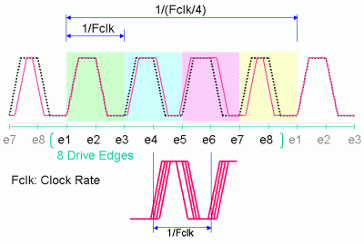
Figure 2. X8-Mode Clock Generation
In order to clearly demonstrate the effect of the methods, the drivers used in the experiment is not calibrated on purpose so that there are some edge placement errors in the 8 edge locations, which would appear as the deterministic jitter of the clock stream. In other words the test signal would be small phase modulated clock stream.
Figure 3 is a photograph of the load board. The two boards used for connecting the tester resources are identical. One is used for digital pin drivers and the other is used for the measurement by MCC. They are carefully designed for high-speed signal integrity, considering the material of the board, impedance control of the traces and via holes.
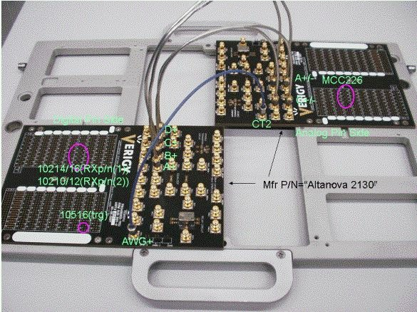
Figure 3. DUT Board
Test Condition
In sampler applications, the key to get successful results is to set up a strict coherent condition, which can be described as the equation below.
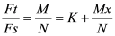
(Equation 1)Ft : test signal frequency
Fs : sampling frequency of the sampler
M : number of clock waveform cycles
N : number of the sampling points
Mx : aliased bin number
K : frequency zone number
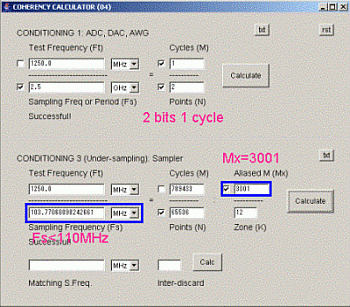
Figure 4. Coherency Calculator
The Coherency Calculator shown in Figure 4 is handy and helpful for the strict coherent conditioning. This tool performs Equation (1), helping you figure out the precise sampling frequency. First, Ft is 1250 MHz and N is decided as 65536. Fs is planned as slightly less than 110 Msps, which is the maximum specification of MCC, and Mx is decided as 3001 here. Consequently the precise sampling frequency is calculated as Figure 4 depicts. This tool is still a stand-alone Java tool. In the near future it may be able to integrate into the Eclipse framework as a plug-in.
Spectrum Analysis
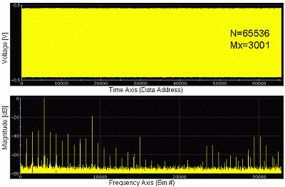
Figure 5. Waveform and Spectrum
Figure 5 shows the captured waveform and its frequency spectrum. There are 3001 cycles of clock waveform captured in 65,536 points so that the waveform does not really look like a waveform.
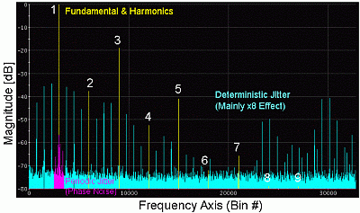
Figure 6. Spectrum Analysis
Examining the spectrum precisely, the fundamental signal and its harmonics up to 7th, which are colored yellow in Figure 6, can be found, and they make up the primitive waveform of the clock. In the very vicinity of the fundamental you can find a small residual phase noise, which is colored red. This makes up a random jitter.
With summing up the residual phase noise power as shown in Figure 7, you can estimate the random jitter components of the signal using Equations (2) and (3).
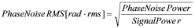
(Equation 2)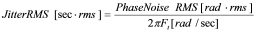
(Equation 3)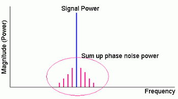
Figure 7. Phase Noise as Random Jitter
You can find lots of big spurs in the rest of the spectral lines colored blue. The spurs except the harmonics make up the deterministic jitter. The clock stream is generated with X8-mode of the pin driver. The experimental data in this paper is captured without any focused edge calibration. Consequently the total clock stream contains relatively big edge placement errors, which occur every four clock pulses so that the clock stream would be seen as 1/4 clock-rate phase-modulated clock signal as depicted in Figure 2. Therefore they cause the noticeable spurs.
With summing up the power of big blue spurs as shown in Figure 8, you can estimate the deterministic jitter components of the signal using Equations (4) and (5). The fundamental and harmonics components are excluded in this calculation.
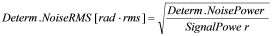
(Equation 4)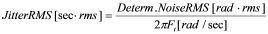
(Equation 5)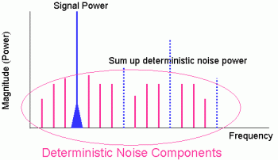
Figure 8. Spurs as Deterministic Jitter
From the spectrum in Figure 6, the random jitter and the deterministic jitter are calculated as 0.86[ps.rms] and 5.4[ps.rms] respectively so that the total jitter would become 6.3[ps.rms].
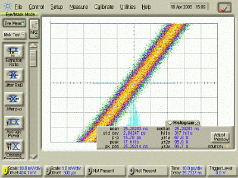
Figure 9. Typical Jitter Performance
The experimental result shown in this paper does not indicate the true performance of the Pin Scale 3600 pin electronics. A well-calibrated Pin Scale 3600 channel usually has 2 to 3[ps.rms] of jitter as Figure 9 shows. This is measured by a Digital Channel Analyzer (DCA).
Waveform Analysis
There are 3001 cycles of the clock waveform captured in the time domain data. You can replicate a single cycle of the clock waveform by applying a handy API for coherent reconstruction as follows.
DSP_SHUFFLE(WaveIn, WaveOut, 3001);
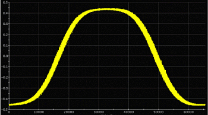
Figure 10. Reconstructed Waveform
It reconstructs the waveform as Figure 10, in which the signal has actually been processed to locate in the center of the window. The centering process is an application of FFT, which is described in detail at VOICE 2007.[2]
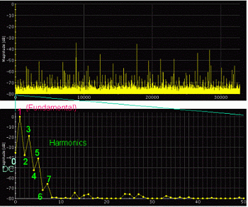
Figure 11. Spectrum
Applying FFT to the reconstructed waveform, the spectrum looks as Figure 11. The bin #1 is the fundamental component, and the harmonics components are lined up from the bin #2 and higher bins. Closely examining the spectrum in the vicinity of DC, the lower graph shows that the fundamental and up to 7th harmonics are significant so that in this particular example, a total of eight components including DC can reconstruct the primitive waveform.
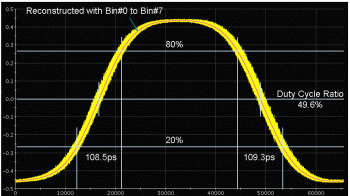
Figure 12. Noise-free Waveform
Collecting the 8 spectral components and applying IFFT, the noise-free clock waveform is reconstructed as the fine line in the thick trace in Figure 12. When deciding the logic high (100%) and low (0%) levels, the level histogram method is applied in the vertical direction. The detailed processing is also described in the article cited above.[2] Then you can easily calculate the rise and fall times 109ps between 20% and 80% levels. This result is much better than the specification 150ps.[3] The duty cycle ratio is derived 49.6%.
When you closely examine the rising and falling edges of the waveform, you find the thick trace is actually composed with data dots as Figure 13 shows.
Small areas in the rising and falling edges around the mid level of the waveform, for example, areas between 40% and 60% levels can be used to estimate jitter values.
The idea is that the voltage errors are interpreted into the time errors with referring the slew rate of the edges.
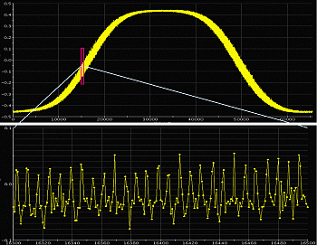
Figure 13. Fluctuation
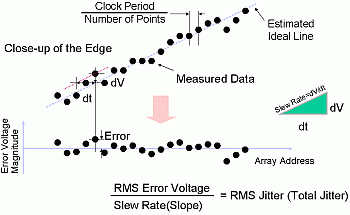
Figure 14. Noise to Jitter Conversion
Figure 14 shows the methodology.
The ideal reference line is the reconstructed noise-free trace in Figure 11. Or for simplicity,
instead of the reconstructed waveform, you may create linear regression lines using an
API DSP_REG1(), which figures out the slope and offset of the estimated
straight line. Then you can calculate how far each dot is located away from the ideal location.
The voltage errors can be interpreted into the time errors by the slew-rate or slope of the
ideal line. Consequently the total jitter can be calculated by the time error
array.
Figure 15 shows that the method described in Figure 14 is applied to the reconstructed clock waveform. In this example the edges from 40% to 60% are supposed to be linear.
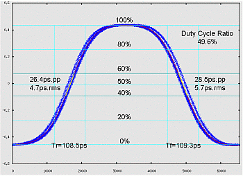
Figure 15. Total Jitter Calculation
In Figure 15, the total jitter is calculated as 26.4[ps.p-p] and 4.7[ps.rms] for the rising edge, and 28.5[ps.p-p] and 5.7[ps.rms] for the falling edge. The rms values match the total jitter calculated by the spectrum method in the previous section. In order to examine the waveform precisely, this figure is plotted by using gnuplot instead of the standard signal analyzer. You can see the edge placement is not well aligned in this particular example. That's why the jitter result is bigger than the normal Pin Scale 3600 channel performance.
Discussion
Jitter is the timing fluctuation of a signal crossing over a certain threshold level. The spectrum method described in section 3 and the waveform method described in section 4 do not measure the time parameters directly. These methods are an indirect estimation of the jitter. In the spectrum method, you need to look at the spectrum precisely and decide where and how many spectral lines to collect for calculating the jitter. In the waveform method, you need to look at the waveform precisely and decide appropriate areas to draw the regression lines for calculating the jitter. This is an important process to be done during online debug.
In the spectrum method in section 3, the spurs falling in the fundamental bin and its harmonics bins cannot be counted in the jitter calculation. Also, the noise floor is not considered. It would contain not only jitter but also quantization noise of the A/D converter in the instrument as well. This method should be applied to relatively large jitters.
In the waveform method in section 4, the voltage error is converted into the time error with regard to the slew rate of the edges. As you can notice, Y-axis errors include not only the jitter components but also the intrinsic voltage noise and quantization noise. So this method can also be viable for relatively large jitter.
Conclusion
A clock waveform is one of the most typical test signals in the waveform sampler applications. In this paper, the waveform sampler MCC measures the 1.25GHz clock signal. The jitter estimation procedures are precisely discussed. Two different approaches - the spectrum analysis and the waveform analysis - are demonstrated step by step. Both results correlate well with each other. The spectrum method can separate random jitter and the deterministic jitter. In the waveform analysis, the rise/fall times and the duty ratio calculations are discussed. Each method utilizes sophisticated DSP methodologies, which are provided in the V93000 SOC test system. Each method extracts jitter values indirectly so that you need to examine the spectrum and waveform precisely and decide the areas of analysis during the online debug stage. These methods are used in production today.
Acknowledgement
The author wishes to acknowledge the kind advice and active discussion of his colleague Juergen Wolf, Verigy.
Biography
Hideo Okawara is a Principal Application Consultant for Verigy, based in Japan. Mr. Okawara joined Hewlett-Packard in 1975, originally involved in research and development for an impedance analyzer, a capacitance meter and mixed-signal LSI testers. He moved into applications in the mid-1980s. As the company evolved from HP to Agilent and now to Verigy, Mr. Okawara has continued as an applications engineer/consultant for mixed signal test. With Verigy's Center of Expertise, he focuses on consulting and developing test methodologies for digital consumer devices. He earned both a bachelors and masters degree in electrical engineering from Tohoku University in Sendai, Japan.
References
[1] Verigy, E7050-91017 V93000 System Reference
[2] Hideo Okawara, Novel Eye Pattern Test Method by Waveform Sampler, VOICE 2007, 2007
[3] Verigy, V93000 Specifications